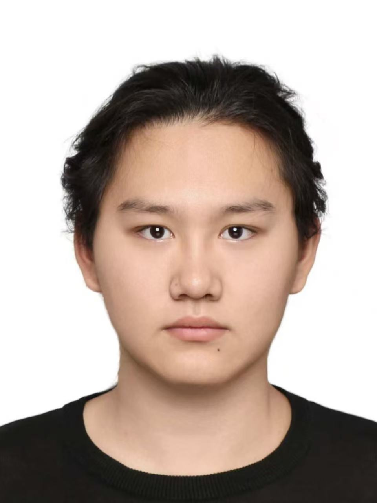
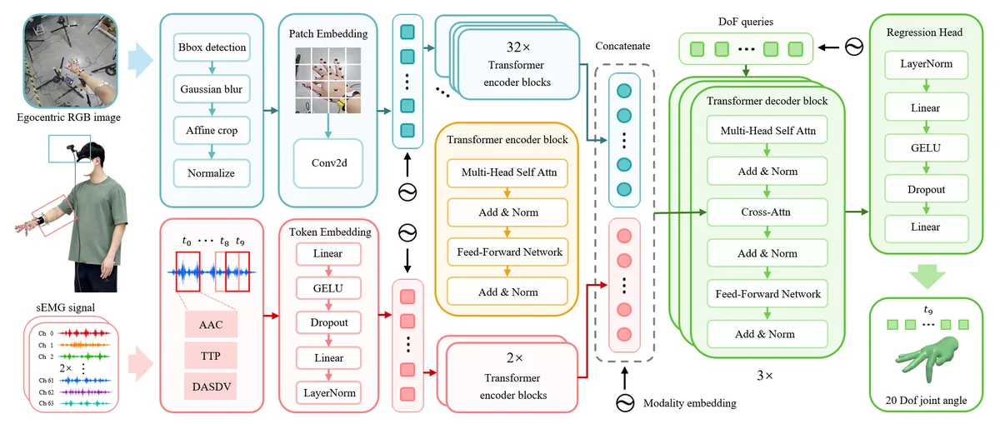
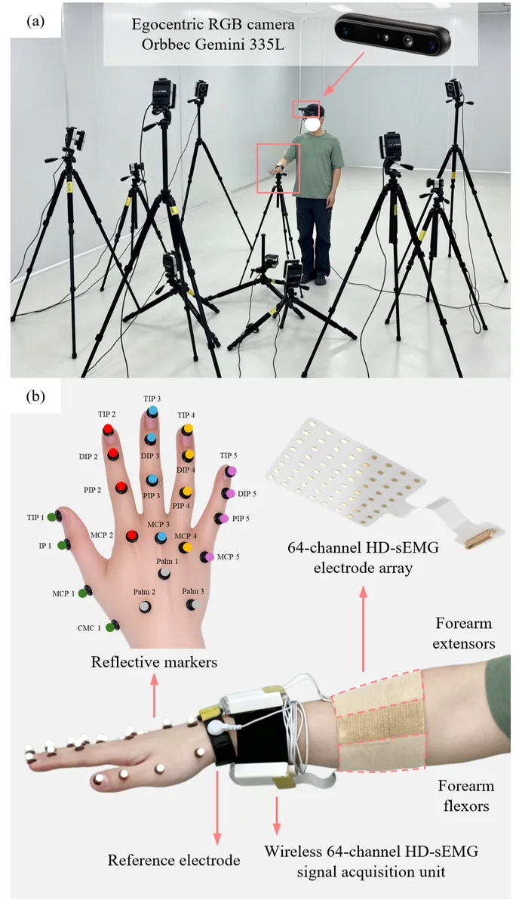
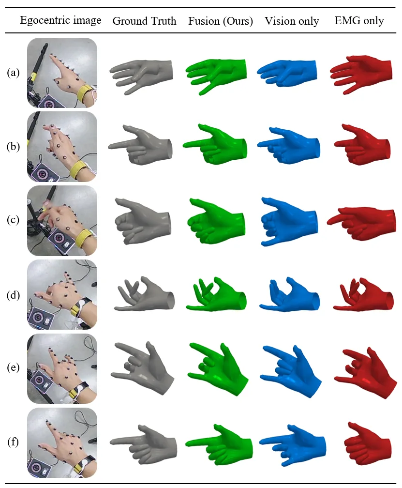
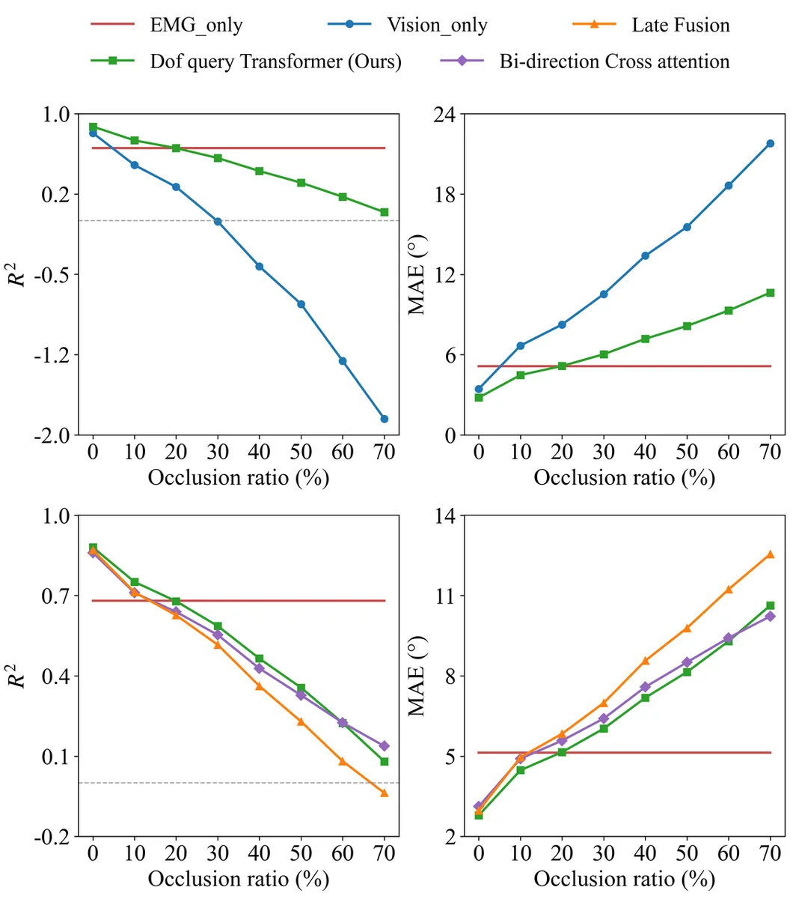
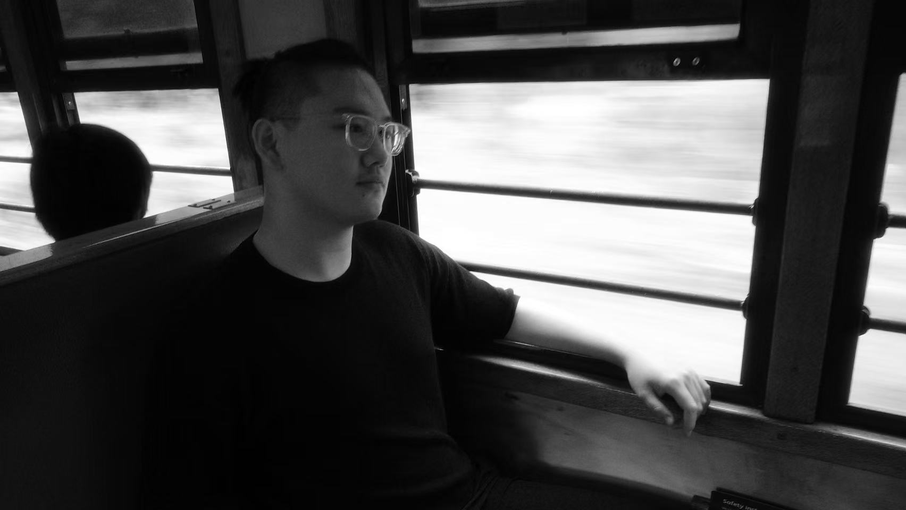

2025.10
— 2026.04
The University of Tokyo东京大学
Special Research Student · Graduate School of Engineering工学系研究科 · 特别研究学生

WELCOME TO MY HOME PAGE!欢迎来到我的主页！
I am an M.S. candidate in Mechanical Engineering at Dalian University of Technology and a former Special Research Student at The University of Tokyo. My research explores multimodal fusion of vision and sEMG for hand-motion understanding, human-intent perception, and dexterous teleoperation.
我是大连理工大学机械工程硕士研究生，曾赴东京大学担任特别研究学生。我的研究聚焦视觉与表面肌电的多模态融合，用于手部运动理解、人体意图感知与灵巧遥操作。
I believe human-robot interaction is shaped by more than technology: aesthetics is also fundamental to how interaction is perceived and experienced. This belief connects my robotics research with my work across industrial design projects.我认为，人机交互不仅由技术塑造，美学同样影响交互被感知和体验的方式。因此，我也参与了多个工业设计项目，并将工程研究与产品美学贯穿于同一套实践之中。
Based in所在地Dalian, China
ORCID0009-0005-8706-3198Foundation学术基础
2025.10
— 2026.04
Special Research Student · Graduate School of Engineering工学系研究科 · 特别研究学生
2024.09
— 2027.07
M.S. Student · Mechanical Engineering机械工程 · 硕士研究生
2020.09
— 2024.07
B.Eng. · Mechanical Design, Manufacturing and Automation机械设计制造及其自动化 · 工学学士
Peer-reviewed work同行评议成果
IEEE Robotics and Automation Letters · 2026 · First author
Jiahang Liu, Zhipeng Li, Renzhen Le, Xiao Zhang, Naohiko Sugita, Zhenzhi Ying, Liming Shu
IEEE/ASME Transactions on Mechatronics · 2026 · Accepted
Zhenzhi Ying, Wenbo Zhang, Jiahang Liu, Jiaze Sun, et al.
Project Experience项目经历
Current research · Under Review当前研究 · 审稿中
Dalian University of Technology / University of Tokyo
2025.09 — PRESENT至今
Continuous 20-DoF hand joint-angle regression from egocentric vision and 128-channel high-density sEMG using joint-specific multimodal queries.融合第一视角视觉与 128 通道高密度表面肌电，通过面向关节的多模态查询连续回归 20 自由度手部关节角。




Dalian University of Technology
2024.09 — 2025.07
Bachelor graduation thesis · Dalian University of Technology本科毕业设计 · 大连理工大学
2023.10 — 2024.07
Form, structure, and product thinking形态、结构与产品思维
Aesthetics is an integral part of interaction.美学，决定交互如何被感知。
As Design Director at Venture Electronics, I work across product form, enclosure architecture, and visual communication for personal-audio hardware. I also design research hardware at Dalian University of Technology, centered on high-density sEMG acquisition systems.
作为 Venture Electronics 设计总监，我参与个人音频硬件的产品形态、外壳结构与视觉表达。同时，我也在大连理工大学参与高密度表面肌电采集系统相关的科研硬件设计。
Design Director设计总监
Research hardware科研硬件
Dalian University of Technology
Toolbox & character工具与个性
Python · PyTorch · PyTorch Lightning · OpenCV · MuJoCo · MATLAB · ROS2
Rhino · Autodesk Inventor · KeyShot
Mandarin · Native
English · CET-6 535中文 · 母语
英语 · CET-6 535

Outside the lab实验室之外
The same curiosity, expressed through sound, movement, conversation, and craft.同一种好奇心，在声音、运动、交流与手作中延续。
Five directions五个方向